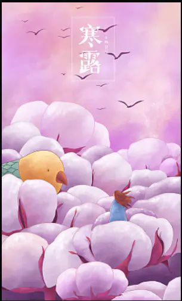

作词：George、Takahash
作曲：潘伟源
星的光点点洒于午夜
人人开开心心说说故事
偏偏今宵所想讲不太易
迟疑地望你想说
又复迟疑
秋风将涌起的某夜
遗留她的窗边有个故事
孤单单的小伙子不顾寂寞
徘徊树下直至天际露月儿
冬风吹走几多个月夜
为何窗边的她欠缺注视
刻于窗扉小子写的爱慕字
完全没用像个飘散梦儿
今宵的小伙子倾吐憾事
谁人痴痴的要再听故事
偏偏痴心小子只知道上集
祈求下集是个可爱梦儿
知不知对你牵上万缕爱意
每晚也痛心空费尽心思
这小子欲断难断这故事
全为我爱上你偏偏你不知
春风轻吹点点火花衫月夜
人人开开心心说说故事
终于倾出这小子的往事
长年累月为你怎再自持
今宵知否对你的暗示
为何真的将它当故事
偏偏痴心小子只知道上集
祈求下集是个可爱梦儿
知不知对你牵上万缕爱意
每晚也痛心空费尽心思
这小子欲断难断这故事
全为爱上了你偏偏你不知
知不知每晚想你十次百次
每晚也去等因我极心痴
可不可合力延续这故事
延续这片爱意一生俩相依
知不知对你牵上万缕爱意
每晚也痛心空费尽心思
这小子欲断难断这故事
全为爱上了你偏偏你不知
知不知每晚想你十次百次
每晚也去等因我极心痴
可不可合力延续这故事
延续这片爱意
一生俩相依
